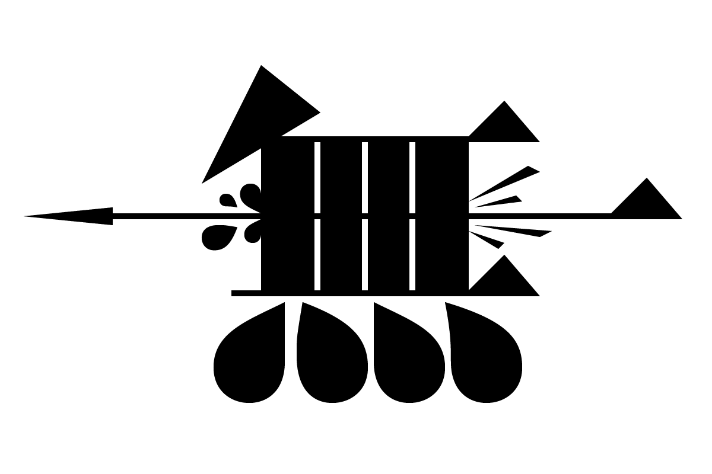
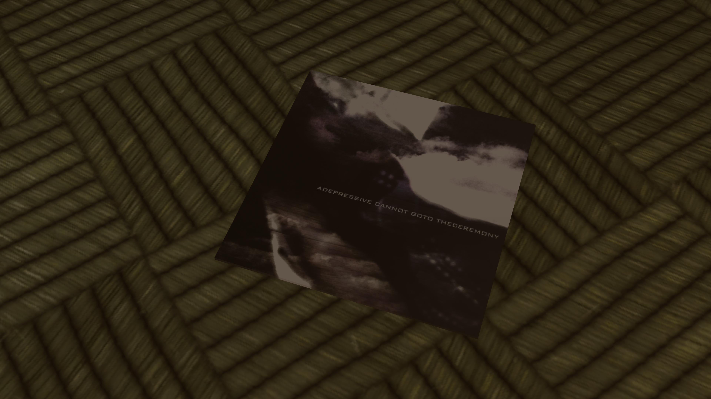
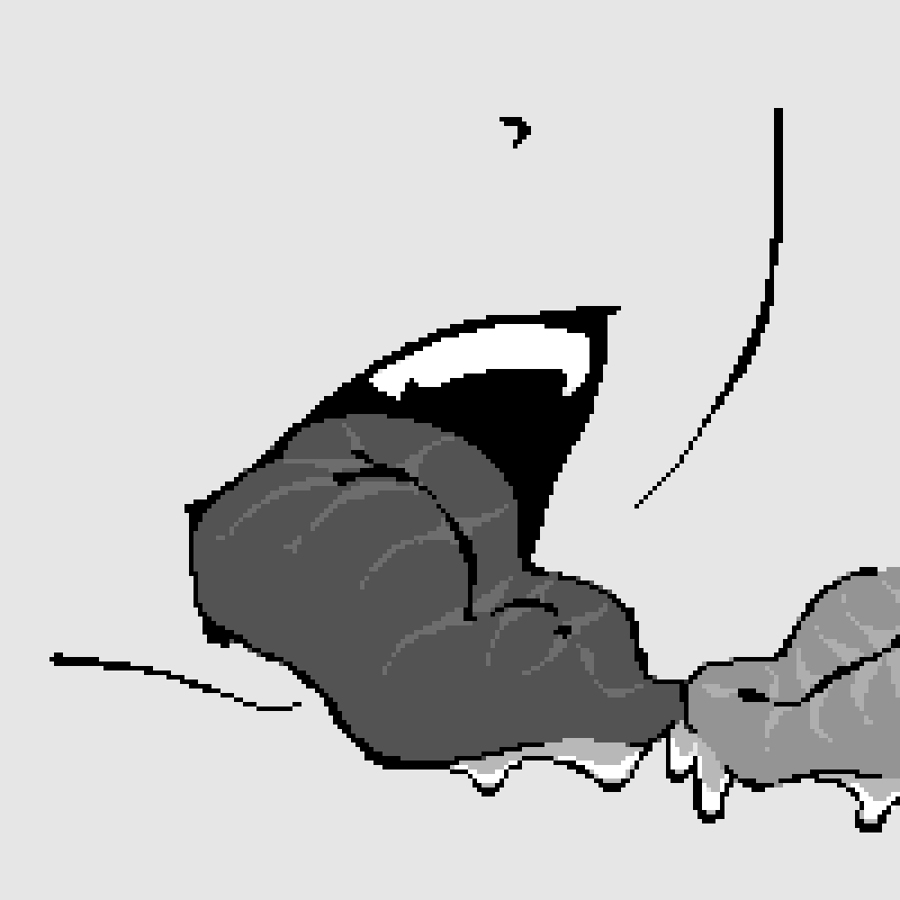

2007年2月20日生まれ。ナードやギークやストリートになりきれない不安定存在。初音ミクとは同い年で妹的存在。小さいころから絵を描きパソコンに親しんでいたため、高度なことにのめりこみ様々な作品を制作して発表する...わけもなく、流れるまま受動的に数年間過ごす。2020年代になってからやっと自主的な活動量が増え、VRChatで音楽イベントの運営スタッフなどをやっていたが発狂。人間と付き合うのは無理と判断し社会から切り離されるも、個人的にいろいろと活動中。

無 ／ 2025
ふゆねのさいと

imoutoidを聞くためだけのワールド ／ VRChat World ／ 2025

notitle ／ 2023
N/A
または
宇留野冬音[うるのふゆね]
2007年2月20日生まれ。ナードやギークやストリートになりきれない不安定存在。初音ミクとは同い年で妹的存在。小さいころから絵を描きパソコンに親しんでいたため、高度なことにのめりこみ様々な作品を制作して発表する...わけもなく、流れるまま受動的に数年間過ごす。2020年代になってからやっと自主的な活動量が増え、VRChatで音楽イベントの運営スタッフなどをやっていたが発狂。人間と付き合うのは無理と判断し社会から切り離されるも、個人的にいろいろと活動中。